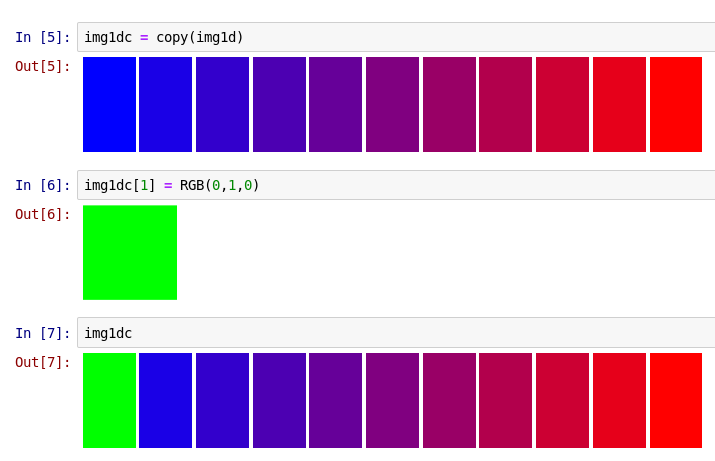

Views
View types defined in ImageCore
It is quite possible that the default representation of images will satisfy most or all of your needs. However, to enhance flexibility in working with image data, it is possible to leverage several different kinds of "views." Generically, a view is an interpretation of array data, one that may change the apparent meaning of the array but which shares the same underlying storage: change an element of the view, and you also change the original array. Views can facilitate processing images of immense size without making copies, and writing algorithms in the most convenient format often without having to worry about the potential cost of converting from one format to another.
To illustrate views, it's helpful to begin with a very simple image:
julia> using Colors
julia> img = [RGB(1,0,0) RGB(0,1,0);
RGB(0,0,1) RGB(0,0,0)]
2×2 Array{ColorTypes.RGB{FixedPointNumbers.Normed{UInt8,8}},2}:
RGB{N0f8}(1.0,0.0,0.0) RGB{N0f8}(0.0,1.0,0.0)
RGB{N0f8}(0.0,0.0,1.0) RGB{N0f8}(0.0,0.0,0.0)which displays as

Most commonly, it's convenient that all dimensions of this array correspond to pixel indices: you don't need to worry about some dimensions of the array corresponding to "color channels" and other the spatial location, and you're guaranteed to get the entire pixel contents when you access that location.
That said, occassionally there are reasons to want to treat RGB as a 3-component vector. That's motivation for introducing our first view:
julia> v = channelview(img)
3×2×2 Array{FixedPointNumbers.Normed{UInt8,8},3}:
[:, :, 1] =
1.0N0f8 0.0N0f8
0.0N0f8 0.0N0f8
0.0N0f8 1.0N0f8
[:, :, 2] =
0.0N0f8 0.0N0f8
1.0N0f8 0.0N0f8
0.0N0f8 0.0N0f8channelview does exactly what the name suggests: provide a view of the array using separate channels for the color components.
To access the underlying representation of the N0f8 numbers, there's another view called rawview:
julia> r = rawview(v)
3×2×2 Array{UInt8,3}:
[:, :, 1] =
0xff 0x00
0x00 0x00
0x00 0xff
[:, :, 2] =
0x00 0x00
0xff 0x00
0x00 0x00Let's make a change in one of the entries:
julia> r[3,1,1] = 128
128If we display img, now we get this:

You can see that the first pixel has taken on a magenta hue, which is a mixture of red and blue. Why does this happen? Let's look at the array values themselves:
julia> r
3×2×2 Array{UInt8,3}:
[:, :, 1] =
0xff 0x00
0x00 0x00
0x80 0xff
[:, :, 2] =
0x00 0x00
0xff 0x00
0x00 0x00
julia> v
3×2×2 Array{FixedPointNumbers.Normed{UInt8,8},3}:
[:, :, 1] =
1.0N0f8 0.0N0f8
0.0N0f8 0.0N0f8
0.502N0f8 1.0N0f8
[:, :, 2] =
0.0N0f8 0.0N0f8
1.0N0f8 0.0N0f8
0.0N0f8 0.0N0f8
julia> img
2×2 Array{ColorTypes.RGB{FixedPointNumbers.Normed{UInt8,8}},2}:
RGB{N0f8}(1.0,0.0,0.502) RGB{N0f8}(0.0,1.0,0.0)
RGB{N0f8}(0.0,0.0,1.0) RGB{N0f8}(0.0,0.0,0.0)The hexidecimal representation of 128 is 0x80; this is approximately halfway to 255, and as a consequence the N0f8 representation is very near 0.5. You can see the same change is reflected in r, v, and img: there is only one underlying array, img, and the two views simply reference it.
Maybe you're used to having the color channel be the last dimension, rather than the first. We can achieve that using permuteddimsview:
julia> p = permuteddimsview(v, (2,3,1))
2×2×3 permuteddimsview(Array{FixedPointNumbers.Normed{UInt8,8},3}, (2,3,1)) with element type FixedPointNumbers.Normed{UInt8,8}:
[:, :, 1] =
1.0N0f8 0.0N0f8
0.0N0f8 0.0N0f8
[:, :, 2] =
0.0N0f8 1.0N0f8
0.0N0f8 0.0N0f8
[:, :, 3] =
0.502N0f8 0.0N0f8
1.0N0f8 0.0N0f8
julia> p[1,2,:] = 0.25
0.25
julia> p
2×2×3 permuteddimsview(Array{FixedPointNumbers.Normed{UInt8,8},3}, (2,3,1)) with element type FixedPointNumbers.Normed{UInt8,8}:
[:, :, 1] =
1.0N0f8 0.251N0f8
0.0N0f8 0.0N0f8
[:, :, 2] =
0.0N0f8 0.251N0f8
0.0N0f8 0.0N0f8
[:, :, 3] =
0.502N0f8 0.251N0f8
1.0N0f8 0.0N0f8
julia> v
3×2×2 Array{FixedPointNumbers.Normed{UInt8,8},3}:
[:, :, 1] =
1.0N0f8 0.0N0f8
0.0N0f8 0.0N0f8
0.502N0f8 1.0N0f8
[:, :, 2] =
0.251N0f8 0.0N0f8
0.251N0f8 0.0N0f8
0.251N0f8 0.0N0f8
julia> img
2×2 Array{ColorTypes.RGB{FixedPointNumbers.Normed{UInt8,8}},2}:
RGB{N0f8}(1.0,0.0,0.502) RGB{N0f8}(0.251,0.251,0.251)
RGB{N0f8}(0.0,0.0,1.0) RGB{N0f8}(0.0,0.0,0.0)Once again, p is a view, and as a consequence changing it leads to changes in all the coupled arrays and views.
Finally, you can combine multiple arrays into a "virtual" multichannel array. We'll use the lighthouse image:
{kind=link}
using ImageCore, TestImages, Colors
img = testimage("lighthouse")
# Split out into separate channels
cv = channelview(img)
# Recombine the channels, filling in 0 for the middle (green) channel
rb = colorview(RGB, cv[1,:,:], zeroarray, cv[3,:,:])zeroarray is a constant which serves as a placeholder to create a (virtual) all-zeros array of size that matches the other arguments.
rb looks like this:

In this case, we could have done the same thing somewhat more simply with cv[2,:,:] = 0 and then visualize img. However, more generally you can apply this to independent arrays which may not allow you to set values to 0. In IJulia,

The error comes from the fact that img1d does not store values separately from the LinSpace objects used to create it, and LinSpace (which uses a compact representation of a range, storing just the endpoints and the number of values) does not allow you to set specific values. However, if you need to set individual values, you can make a copy:

The fact that no storage is allocated by colorview is very convenient in certain situations, particularly when processing large images.
colorview's ability to combine multiple grayscale images is based on another view, StackedView, which you can also use directly.
A note on the return types from the views
The lowercase functions try to return the "simplest" type that will serve as a view. For example, our very first view at the top of this page returned an Array:
julia> img
2×2 Array{ColorTypes.RGB{FixedPointNumbers.Normed{UInt8,8}},2}:
RGB{N0f8}(1.0,0.0,0.0) RGB{N0f8}(0.0,1.0,0.0)
RGB{N0f8}(0.0,0.0,1.0) RGB{N0f8}(0.0,0.0,0.0)
julia> cv = channelview(img)
3×2×2 Array{FixedPointNumbers.Normed{UInt8,8},3}:
[:, :, 1] =
1.0N0f8 0.0N0f8
0.0N0f8 0.0N0f8
0.0N0f8 1.0N0f8
[:, :, 2] =
0.0N0f8 0.0N0f8
1.0N0f8 0.0N0f8
0.0N0f8 0.0N0f8However, if we used a slightly different input, we get a ChannelView:
julia> img0 = rand(RGB{Float64}, 3, 2)
3×2 Array{ColorTypes.RGB{Float64},2}:
RGB{Float64}(0.663329,0.902757,0.598058) RGB{Float64}(0.0830178,0.729289,0.760395)
RGB{Float64}(0.554595,0.698961,0.709871) RGB{Float64}(0.268782,0.242491,0.537012)
RGB{Float64}(0.617316,0.296282,0.838878) RGB{Float64}(0.192074,0.0743438,0.830025)
julia> imgs = view(img0, 1:2:3, :)
2×2 SubArray{ColorTypes.RGB{Float64},2,Array{ColorTypes.RGB{Float64},2},Tuple{StepRange{Int64,Int64},Colon},false}:
RGB{Float64}(0.663329,0.902757,0.598058) RGB{Float64}(0.0830178,0.729289,0.760395)
RGB{Float64}(0.617316,0.296282,0.838878) RGB{Float64}(0.192074,0.0743438,0.830025)
julia> channelview(imgs)
3×2×2 ChannelView(::SubArray{ColorTypes.RGB{Float64},2,Array{ColorTypes.RGB{Float64},2},Tuple{StepRange{Int64,Int64},Colon},false}) with element type Float64:
[:, :, 1] =
0.663329 0.617316
0.902757 0.296282
0.598058 0.838878
[:, :, 2] =
0.0830178 0.192074
0.729289 0.0743438
0.760395 0.830025The reason for this difference is the following: an Array always uses contiguous memory to represent its values, and consequently you can only use an Array to represent a view if the "source" object is contiguous in memory. In the latter case, the SubArray created by view does not have contiguous memory, so instead a ChannelView type is returned, which can create a channel view of any type of input.
If your application requires consistency, you can use ChannelView directly:
julia> ChannelView(img)
3×2×2 ChannelView(::Array{ColorTypes.RGB{FixedPointNumbers.Normed{UInt8,8}},2}) with element type FixedPointNumbers.Normed{UInt8,8}:
[:, :, 1] =
1.0N0f8 0.0N0f8
0.0N0f8 0.0N0f8
0.0N0f8 1.0N0f8
[:, :, 2] =
0.0N0f8 0.0N0f8
1.0N0f8 0.0N0f8
0.0N0f8 0.0N0f8